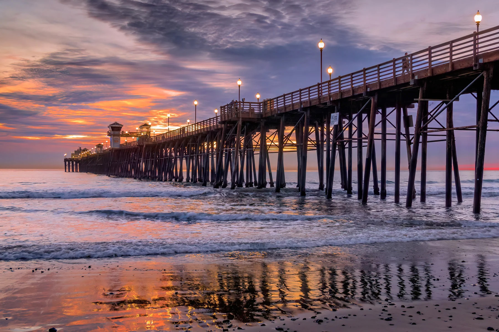
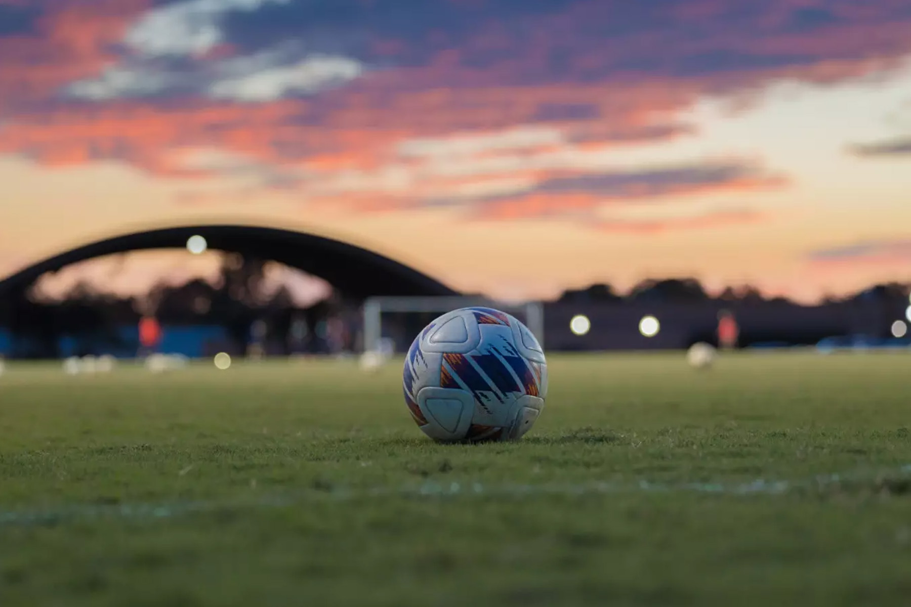

I like spending time with my friends, especially when we go to the beach in Oceanside or walk around downtown, the pier, and even going to sunset market on thursdays. Being by the ocean feels very peaceful, and it’s one of my favorite ways to relax.The sound of the waves and the view always make me feel calm. Hanging out there gives me good memories and helps me appreciate the time I spend with people close to me.
I’m also really inspired to learn about web design because I think it’s exciting to create websites. In my freshman year I had taken Graphic Design which is similar and I really enjoyed it. It’s a way to use technology in creative ways while building something useful. Learning new skills in this area makes me excited about the future. It motivates me to keep working hard and improving every day.

I used to play soccer, and I’m about to start again soon. I’ve always enjoyed the sport because it keeps me active and helps me practice teamwork. I get to be more invloved with my community and school. Playing also gives me a fun challenge that pushes me to get better. Getting back into soccer is something I’m really looking forward to.